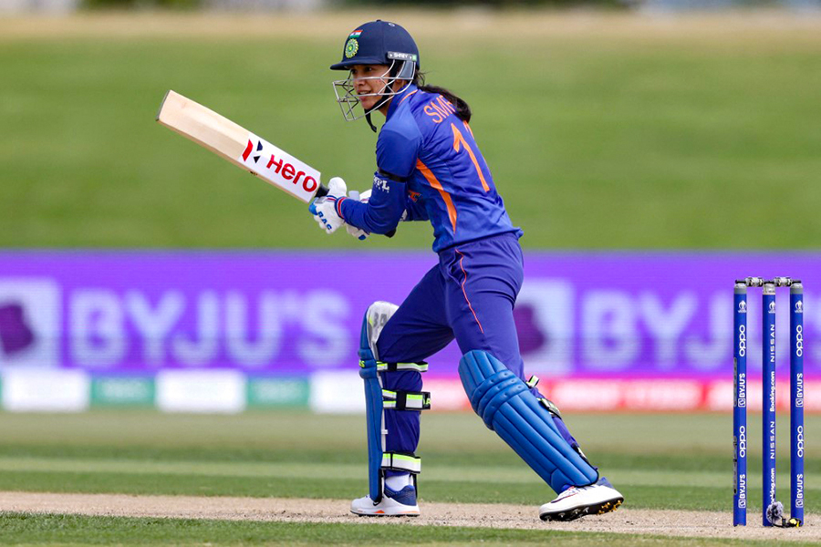
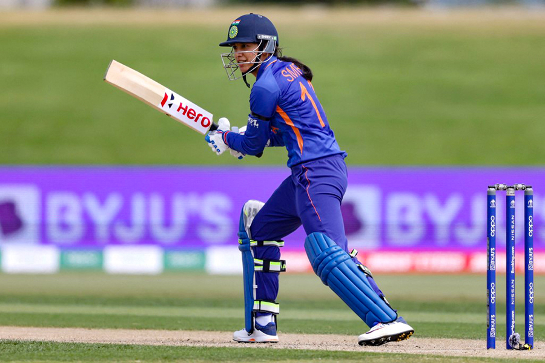

This article is about the sport. For the insect, see Cricket (insect). For other uses, see Cricket (disambiguation).
"Cricketer" redirects here. For other uses, see Cricketer (disambiguation).
Cricket is a bat-and-ball game that is played between two teams of eleven players on a field, at the centre of which is a 22-yard (20-metre) pitch with a wicket at each end, each comprising two bails balanced on three stumps. Two players from the batting team (the striker and nonstriker) stand in front of either wicket holding bats, with one player from the fielding team (the bowler) bowling the ball towards the striker's wicket from the opposite end of the pitch. The striker's goal is to hit the bowled ball with the bat and then switch places with the nonstriker, with the batting team scoring one run for each exchange. Runs are also scored when the ball reaches or crosses the boundary of the field or when the ball is bowled illegally.
The fielding team tries to prevent runs from being scored by dismissing batters (so they are "out"). Means of dismissal include being bowled, when the ball hits the striker's wicket and dislodges the bails, and by the fielding side either catching the ball after it is hit by the bat but before it hits the ground or hitting a wicket with the ball before a batter can cross the crease in front of the wicket. When ten batters have been dismissed, the innings ends and the teams swap roles. Forms of cricket range from Twenty20 (also known as T20), with each team batting for a single innings of 20 overs (each "over" being a set of 6 fair opportunities for the batting team to score) and the game generally lasting three to four hours, to Test matches played over five days.
Traditionally, cricketers play in all-white kit, but in limited overs cricket, they wear club or team colours. In addition to the basic kit, some players wear protective gear to prevent injury caused by the ball, which is a hard, solid spheroid made of compressed leather with a slightly raised sewn seam enclosing a cork core layered with tightly wound string.
The earliest known definite reference to cricket is to it being played in South East England in the mid-16th century. It spread globally with the expansion of the British Empire, with the first international matches in the second half of the 19th century. The game's governing body is the International Cricket Council (ICC), which has over 100 members, twelve of which are full members who play Test matches. The game's rules, the Laws of Cricket, are maintained by Marylebone Cricket Club (MCC) in London. The sport is followed primarily in South Asia, Australia, New Zealand, the United Kingdom, Southern Africa, and the West Indies.[1]
Women's cricket, which is organised and played separately, has also achieved international standard.
The most successful side playing international cricket is Australia, which has won eight One Day International trophies, including six World Cups, more than any other country, and has been the top-rated Test side more than any other country.[citation needed]

 

HISTORY
Cricket is one of many games in the "club ball" sphere that involve hitting a ball with a hand-held implement. Others include baseball (which shares many similarities with cricket, both belonging in the more specific bat-and-ball games category[2]), golf, hockey, tennis, squash, badminton and table tennis.[3] In cricket's case, a key difference is the existence of a solid target structure, the wicket (originally, it is thought, a "wicket gate" through which sheep were herded), that the batter must defend.[4] The cricket historian Harry Altham identified three "groups" of "club ball" games: the "hockey group", in which the ball is driven to and from between two targets (the goals); the "golf group", in which the ball is driven towards an undefended target (the hole); and the "cricket group", in which "the ball is aimed at a mark (the wicket) and driven away from it".[5]
- It is generally believed that cricket originated as a children's game in the south-eastern counties of England, sometime during the medieval period.[4] Although there are claims for prior dates, the earliest definite reference to cricket being played comes from evidence given at a court case in Guildford in January 1597 (Old Style, equating to January 1598 in the modern calendar). The case concerned ownership of a certain plot of land, and the court heard the testimony of a 59-year-old coroner, John Derrick, who gave witness that:[6][7][8]
Being a scholler in the ffree schoole of Guldeford hee and diverse of his fellows did runne and play there at creckett and other plaies.
Given Derrick's age, it was about half a century earlier when he was at school, and so it is certain that cricket was being played c. 1550 by boys in Surrey.[8] The view that it was originally a children's game is reinforced by Randle Cotgrave's 1611 English-French dictionary in which he defined the noun "crosse" as "the crooked staff wherewith boys play at cricket", and the verb form "crosser" as "to play at cricket".[9][10]
One possible source for the sport's name is the Old English word "cryce" (or "cricc") meaning a crutch or staff. In Samuel Johnson's Dictionary, he derived cricket from "cryce, Saxon, a stick".[6] In Old French, the word "criquet" seems to have meant a kind of club or stick.[11] Given the strong medieval trade connections between south-east England and the County of Flanders when the latter belonged to the Duchy of Burgundy, the name may have been derived from the Middle Dutch (in use in Flanders at the time) "krick"(-e), meaning a stick (crook).[11] Another possible source is the Middle Dutch word "krickstoel", meaning a long low stool used for kneeling in church that resembled the long low wicket with two stumps used in early cricket.[12] According to Heiner Gillmeister, a European language expert of Bonn University, "cricket" derives from the Middle Dutch phrase for hockey, "met de (krik ket)sen" ("with the stick chase").[13] Gillmeister has suggested that not only the name but also the sport itself may be of Flemish origin.[13]
Growth of amateur and professional cricket in England
Evolution of the cricket bat. The original "hockey stick" (left) evolved into the straight bat from c. 1760, when pitched delivery bowling began.
Although the main object of the game has always been to score the most runs, the early form of cricket differed from the modern game in certain key technical aspects; the North American variant of cricket known as wicket retained many of these aspects.[14] The ball was bowled underarm by the bowler and along the ground towards a batter armed with a bat that in shape resembled a hockey stick; the batter defended a low, two-stump wicket; and runs were called notches because the scorers recorded them by notching tally sticks.[15][16][17]
In 1611, the year Cotgrave's dictionary was published, ecclesiastical court records at Sidlesham in Sussex state that two parishioners, Bartholomew Wyatt and Richard Latter, failed to attend church on Easter Sunday because they were playing cricket. They were fined 12d each and ordered to do penance.[18] This is the earliest mention of adult participation in cricket and it was around the same time that the earliest known organised inter-parish or village match was played, at Chevening, Kent.[6][19] In 1624, a player called Jasper Vinall died after he was accidentally struck on the head during a match between two parish teams in Sussex.[20]
Cricket remained a low-key local pursuit for much of the 17th century.[10] It is known, through numerous references found in the records of ecclesiastical court cases, to have been proscribed at times by the Puritans before and during the Commonwealth.[21][22] The problem was nearly always the issue of Sunday play, as the Puritans considered cricket to be "profane" if played on the Sabbath, especially if large crowds or gambling were involved.[23][24]
According to the social historian Derek Birley, there was a "great upsurge of sport after the Restoration" in 1660.[25] Several members of the court of King Charles II took a strong interest in cricket during that era.[26] Gambling on sport became a problem significant enough for Parliament to pass the 1664 Gambling Act, limiting stakes to £100, which was, in any case, a colossal sum exceeding the annual income of 99% of the population.[25] Along with horse racing, as well as prizefighting and other types of blood sport, cricket was perceived to be a gambling sport.[27] Rich patrons made matches for high stakes, forming teams in which they engaged the first professional players.[28] By the end of the century, cricket had developed into a major sport that was spreading throughout England and was already being taken abroad by English mariners and colonisers—the earliest reference to cricket overseas is dated 1676.[29] A 1697 newspaper report survives of "a great cricket match" played in Sussex "for fifty guineas apiece", the earliest known contest that is generally considered a First Class match.[30][31]